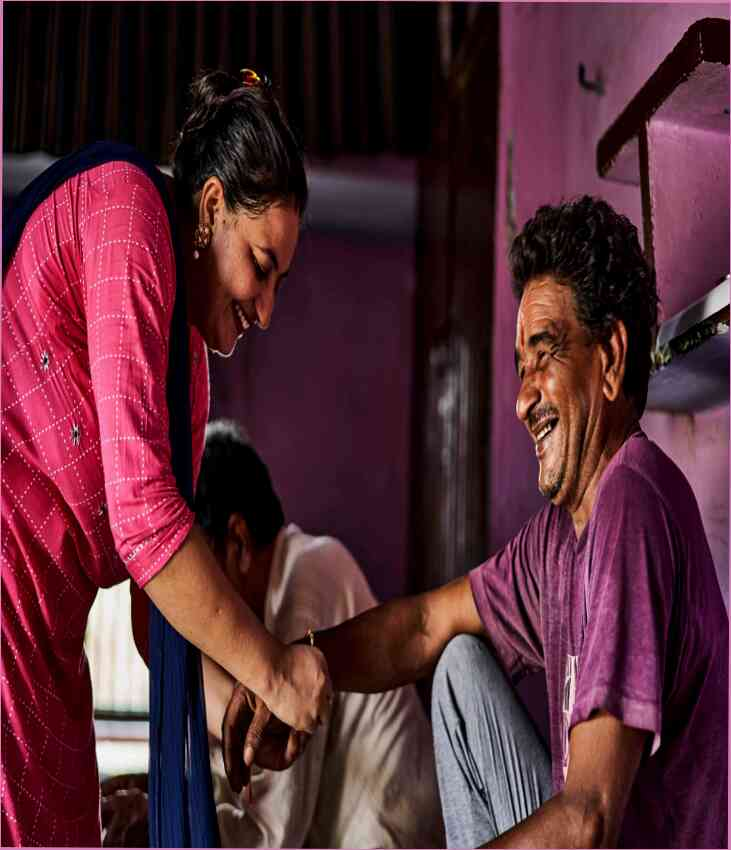

To, čo je užitočné, banány, ananás, pre mužov!?
Marcel /18.05.2021

Ananás je nielen chutné, ale aj užitočné.Ananás obsahuje veľké množstvo vitamínov a minerálnych látok, minerálnych l...
Aké potraviny by sa mali vyhnúť ľudia, ktorí denne
Marcel /18.05.2021

, Každý vie, že mliečne výrobky a podobne sú veľmi škodlivé pre naše zdravie. Ale nenechajte sa rozrušený, existuje mno...
4 produkty, ktoré sú užitočné pre mužov pevnosť
Marcel /18.05.2021

1. Lepok-zdarma. Toto je pravdepodobne najviac prekvapujúce, a tak ďaleko, ako len môžem povedať, prvé jedlo, ktoré takmer ...